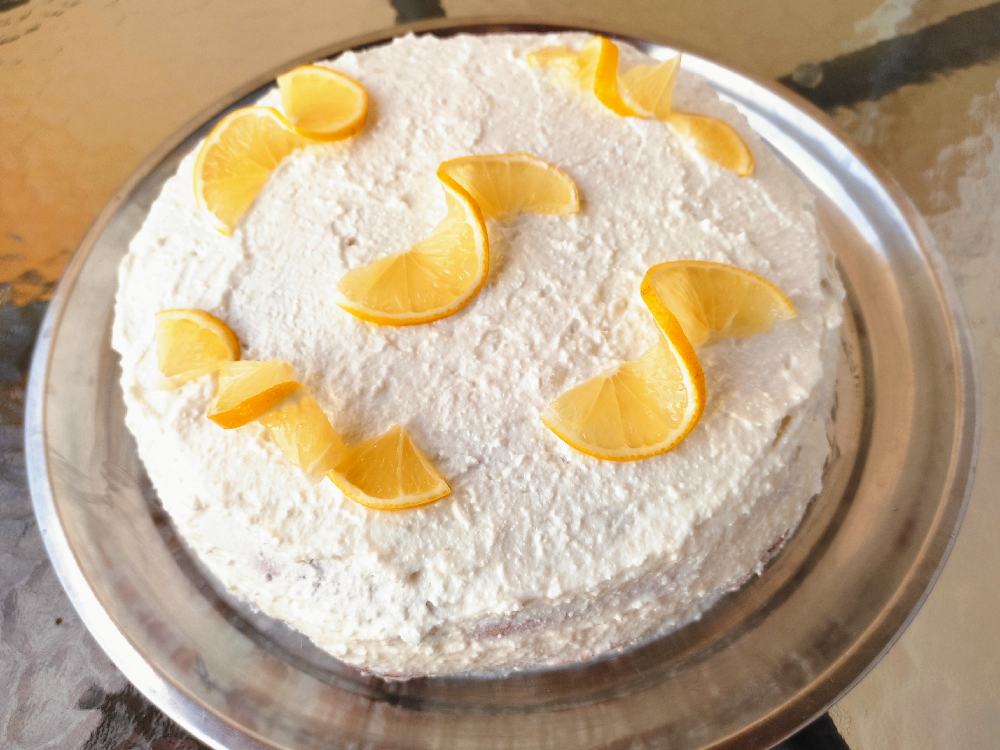

Az általam adott étrend nem szigorú megvonásokon alapuló diétákon alapszik, ahol fogcsikorgatva fogyasztod el a heti 10. csirke-rizs-saláta kombódat. Amit tőlem kapsz, az hosszútávon fenntartható, finom, ízletes és változatos étkezésekből álló menüsor, amit nagyobb adagban elkészítve a családtagok, barátok is szívesen fogyasztanak.
A receptjeim egyaránt tartalmaznak húsimádó és csupa zöldséges fogásokat is, amivel garantáltan jól is laksz, így öröm lesz számodra az egészséges életmód kialakítása.
logo
icon
Online kérdőív kitöltése után kiértékelem a jelenlegi állapotod
Fogyás, izomtömeg növelés, testösszetétel változás
Teljesen a te testedre és életviteledhez szabott étrendet kapsz, amit hosszútávon tudsz beilleszteni a hétköznapjaidba
icon
Olyan ételeket tartalmaz, amiket szeretsz és eddig is fogyasztottál, nem írok olyat, amit soha meg nem ennél
icon
Az első hónapban bátran keress bármilyen kérdésed vagy elakadásod van. Folyamatosan segítelek tanácsokkal, motivációval
icon
Az egészséges életmódhoz szükséges alap élelmiszerek listája, amiket az étrended is tartalmaz és ezen felül is plusz ajánlások
logo
Az általam nyújtott személyre szabott étrend nem csak abban rád szabott, hogy a makrotápanyagokat grammra pontosan kiszámolom neked, hanem abban is, hogy csakis olyan ételekből állítom össze a napi menüdet, amiket Te is szeretni fogsz, illetve megtanítom neked, hogy a jövőben pici tervezéssel, módosítással is gond nélkül tudd csinálni. Az étrend célja nem az, hogy korlátozva érezd magad, hanem az, hogy hosszútávon is élvezetes legyen számodra az egészségtudatos életmód fenntartása!
Nem vagy konyhatündér? Semmi baj :) Minden ételhez megkapod a leírást is, hogyan kell elkészíteni! Hiszem, hogy amit az ember saját maga készít el, tudja, hogy milyen alapanyag kerül bele, sokkal jobban esik az elfogyasztása. Mire kipróbáltál minden receptet, biztos vagyok benne, hogy egy olyan személeted alakul ki az étkezéssel kapcsolatban, ami élvezetes, és örömforrás lesz számodra. A mérték és tudatosság egy egészséges, kiegyensúlyozott táplálkozási szokáshoz fog vezetni :)
Egy alap, de személyre szabott tanácsadás az étkezéseddel és életmódoddal kapcsolatban! A kapcsolatfelvétel után küldök Neked egy részletes kérdőívet, amit a kitöltés után én kielemzek. Ezen felül szükségem lesz tőled egy 3 napos étkezési naplóra (2 hétköznap+1 hétvégi nap), amit minél részletesebben szeretnék Tőled kérni, hiszen ez alapján tudom minél pontosabban feltérképezni a jelenlegi táplálkozási szokásodat. A naplód és kérdőíved beérkezése után 7 munkanapon belül elküldöm neked e-mailben a kiértékelésed, tanácsaimat, javaslataimat a jövőbeli változtatásokat illetően, hogy eltudj indulni egy tudatosabb életmód irányába. Ezen felül küldök egy bevásárló lista mintát, hogy mik azok az élelmiszerek, amiket érdemes mindig otthon tartanod, hogy biztosan ne csábulj el egy gyorséttermi rendelésre, és gyorsan össze tudj állítani valami finomságot magadnak :)
Első lépésben megbeszéljük a célkitűzéseid, az orvosolandó problémáid, majd egy részletes állapotfelmérő kérdőív kitöltését és egy 5 napos étkezési napló megírását kérem Tőled , hogy fény derüljön az alapvető étkezési hibáidra, szokásaidra és megismerjem, hogy milyen típusú ételeket kedvelsz, vagy mindig is kerültél. Ezek beérkezése után én 14 napon belül elkészítem a 7 napos személyre szabott étrendedet és összegzem, hogy miken és miért lenne érdemes változtatnod, hogy minél professzionálisabban tudj haladni a célod felé. Ezeket pdf formátumban, e-mailben fogom továbbítani Neked! Az együttműködés során e-mailben vagy privát üzenetben bátran fordulhatsz hozzám( 2-3 napon belül válaszolok), ha elakadásod van, vagy valamelyik étel mégsem szimpatikus számodra, akkor díjmentesen egyszer változtatok rajta. Az együttműködés során 1-2 hetente várom a visszajelzést a közös munka eredményéről, hogy lássuk, minden a legjobb irányba halad.
- vesebetegség, májbetegség - belső szerv hiánya - 16 éven aluli személy (18 éven aluli személy esetén szülői beleegyezés szükséges) - vegán étrendet igénylők - hisztamin intolerancia - 1- es és 2- es típusú cukorbetegség - szoptatás alatti időszak